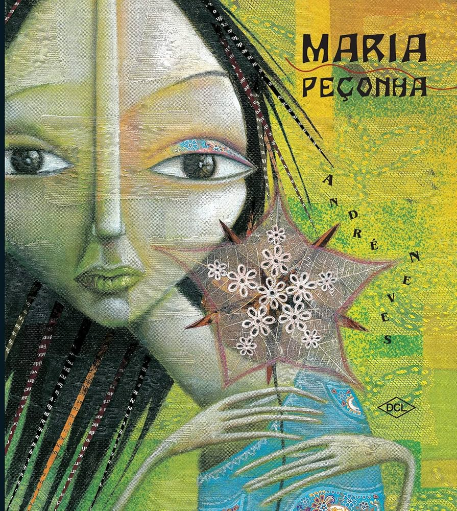
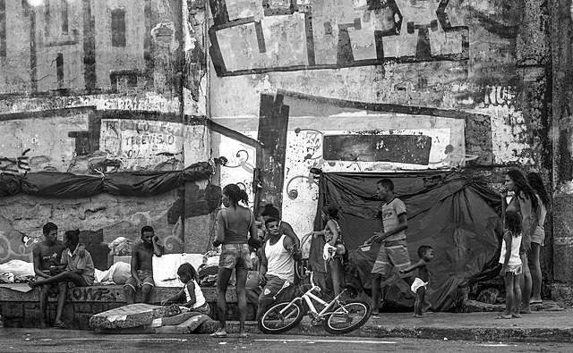

Arte, Literatura e Imaginação Nordestina
André Neves nasceu no Recife, mas mora atualmente em Porto Alegre. Desde a infância esteve em contato com livros, que sua mãe, professora da APAE, deixava pela casa para que os filhos os encontrassem naturalmente. Também por influência da mãe, teve contato com as artes, desenhando e produzindo artesanato com os irmãos, atividades que vendia ainda menino. Com a avó, que sempre lia para ele, aprendeu a perceber o ritmo das palavras. Em 1995 começou a ilustrar livros, desenvolvendo aos poucos a arte de contar histórias por meio das imagens. A ilustração se tornou para André uma forma mágica de expressão, já que sua sensibilidade e seus pensamentos se manifestam mais pelo olhar, permitindo que os outros compreendam o mundo e as relações do cotidiano através das imagens.
O estilo de André Neves combina ilustração e narrativa poética. Cores terrosas, traços de xilogravura, cactos e elementos da cultura sertaneja permeiam suas criações. Ele aborda a memória, a infância e o sonho como instrumentos de resistência cultural. Suas obras frequentemente dialogam com a tradição oral, a religiosidade popular e o imaginário infantil, refletindo uma conexão profunda com o Nordeste.
Embora não seja um ativista político, André Neves expressa uma política cultural profunda: a defesa da infância, da imaginação e da leitura como direitos humanos. Sua obra aborda a história, ancestralidade e pautas do povo nordestino e valoriza a educação, diversidade e o acesso à cultura. Ele participa de projetos de incentivo à leitura e à arte em escolas públicas, contribuindo para a preservação da identidade cultural regional. Além de retratar pautas em decorrência do abandono e preconceito com a Região Nordeste do Brasil, tanto de forma material, como na estrutura cultural em si.
É a partir de suas obras que o autor articula as pautas citadas no bloco Valores e Política Cultural, gerando interpretação moldavel de acordo com o objetivo de leitura, ou seja, que pode mudar de acordo com a visão de quem lê, um exemplo caro disso são obras infantis, que podem ter diversas vertentes em temas complexos. André Neves publicou diversas obras que unem literatura e ilustração, marcadas por poesia, sensibilidade e referências à cultura nordestina. Entre seus livros mais conhecidos estão “Obax”, “Lino”, “A Caligrafia de Dona Sofia”, “Tom” e “O Colecionador de Chuvas”. Suas histórias abordam temas como a imaginação, o afeto, o autoconhecimento e o valor da diversidade, sempre com ilustrações expressivas e cheias de cores. Através de seus livros, André convida o leitor a refletir sobre o olhar poético diante do mundo e a importância de preservar a infância e a sensibilidade nas relações humanas.
Ao longo de sua carreira, André Neves recebeu diversos reconhecimentos por sua contribuição à literatura e à ilustração brasileira. Entre os prêmios mais importantes estão o Prêmio Luís Jardim de 2001, na categoria de melhor livro de imagem, a menção honrosa no Prêmio Jabuti em 2003 e o Prêmio Açorianos de 2004, na categoria de melhor ilustração. Além disso, várias de suas obras receberam o selo “Altamente Recomendável” da Fundação Nacional do Livro Infantil e Juvenil, consolidando seu destaque no universo da literatura infantil e infantojuvenil.
Em 2025, André Neves será o homenageado da SELIBI (Semana do Livro e da Biblioteca) do SESI-SP, evento que ocorrerá de 27 a 30 de outubro. A escolha do autor pernambucano resultou de uma votação democrática que envolveu mais de 25 mil votos de estudantes, professores e bibliotecários da rede SESI no estado de São Paulo, evidenciando a profunda conexão do autor com o público leitor das escolas SESI. Durante a SELIBI 2025, a obra e a biografia de André Neves serão trabalhadas pelos alunos e usuários das bibliotecas do SESI-SP em diversas categorias, como contos, ilustração, fotografia e podcasts. A seleção do homenageado evidenciará o expressivo envolvimento da comunidade escolar e o reconhecimento da importância de sua contribuição à literatura infantojuvenil brasileira. André Neves é conhecido por sua narrativa sensível e traços marcantes, características que encantam leitores de todas as idades. Sua homenagem na SELIBI 2025 reforçará a relevância de sua obra e sua influência na formação de leitores críticos e criativos.